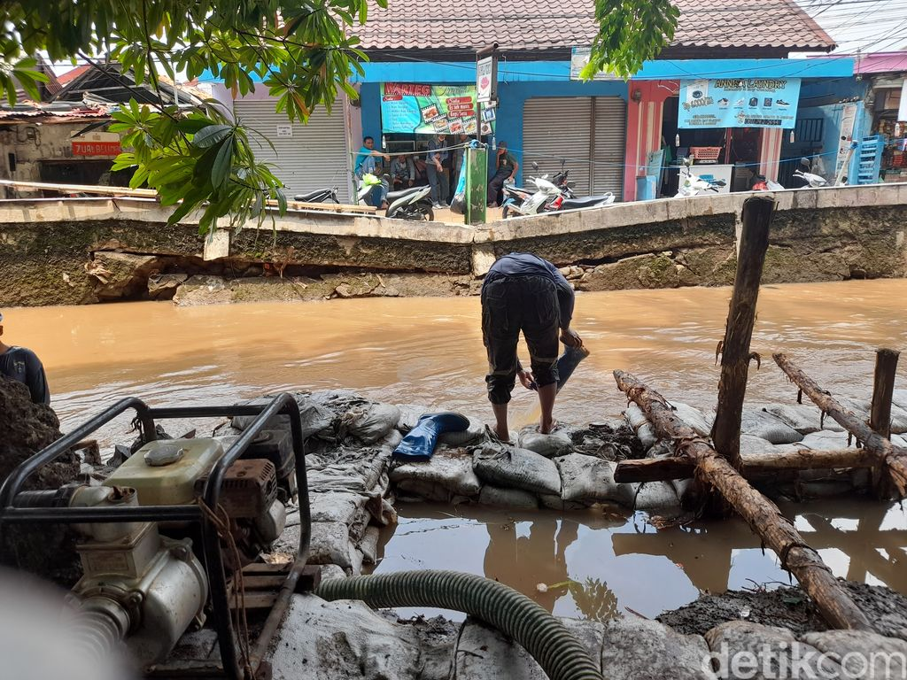

Pemprov DKI Akan Benahi Bantaran Kali di Hek Kramat Jati pada Juli
Pemprov DKI Jakarta menyiapkan anggaran sebesar Rp 9,5 miliar untuk membangun tanggul di Kali Baru, kawasan Hek, Kramat Jati, Jakarta Timur. Kali itu acap kali meluber ke Jl Raya Bogor di sebelahnya dan mengganggu kendaraan. Rencananya, pekerjaan konstruksi atau pembangunan fisik tanggul dimulai pada akhir Juli mendatang.
"Jadi masih dalam proses lelang, diperkirakan kontrak itu direncanakan akhir Juli kontrak. (Konstruksi) langsung bulan Juli juga," kata Subkoordinator Urusan Perencanaan Dinas Sumber Daya Air DKI Jakarta Maman Supratman saat dihubungi detikcom, Selasa (23/5/2023).
Maman mengatakan saat ini proses lelang masih bergulir. Ketika pemenang lelang telah ditentukan, pihaknya langsung menandatangani kontrak untuk segera dilakukan pengerjaan konstruksi.
"Belum. Jadi setelah ditetapkan pemenang lelang, dimulai kontrak," jelasnya.
Maman tidak memerinci berapa perusahaan yang tengah mengikuti lelang. Yang jelas, menurut dia, proses lelang difasilitasi oleh Badan Pelayanan Pengadaan Barang/Jasa DKI Jakarta.
Seperti diketahui, jalanan di pertigaan Hek Kramat Jati, Jakarta Timur, kerap digenangi air imbas luapan Kali Baru. Wali Kota Jaktim M Anwar mengatakan pihaknya ingin bangunan di bantaran kali direlokasi agar bisa dilakukan perbaikan kali secara menyeluruh.
"Itu kan tanggulnya emang udah rawan longsor, terlalu lama ya. Artinya kita melaksanakan perawatan sehingga kita harus melakukan perbaikan secara menyeluruh. Kan di pinggiran itu masih banyak toko-toko," kata Anwar setelah mengikuti acara pengarahan Pj Gubernur DKI Heru Budi di Balai Kota DKI, 26 April lalu.

Sumber : https://news.detik.com/berita/d-6734582/pemprov-dki-akan-benahi-bantaran-kali-di-hek-kramat-jati-pada-juli
PLN Nyatakan Sudah Tertibkan Semua Tiang Listriknya di Jl Perancis
Jakarta - Selain permukaan jalan yang hancur, Jl Raya Perancis di Kabupaten Tangerang dikenal karena tiang-tiang kabel yang berdiri di badan jalan. Kondisi berbahaya ini dinyatakan pihak PLN sudah berhasil diatasi.
Baca Selengkapnya... 24-05-2023Setelah Argentina, Lawan Indonesia Selanjutnya Bisa Saja Brasil!
Jakarta - Indonesia vs Argentina akan berlangsung di FIFA Matchday pada 19 Juni nanti. Baca Selengkapnya...
24-05-2023